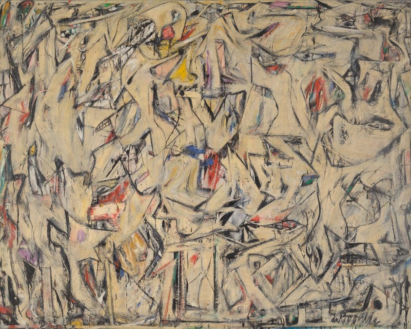

Excavation
Willem de Kooning · 1950 · Oil on canvas · 205.7 × 254.6 cm · Art Institute of Chicago
In copyright. Look and learn: shown for study, not for download.
De Kooning said the starting point was a shot of women working in a rice field in Bitter Rice, an Italian film of 1949. He built the paint up and scraped it back down, often for months, and finished the canvas in June 1950, just in time for the Venice Biennale. At about 206 by 255 centimetres it was the largest painting he had made. The Sidney Janis Gallery sold it to the Art Institute of Chicago in 1952.